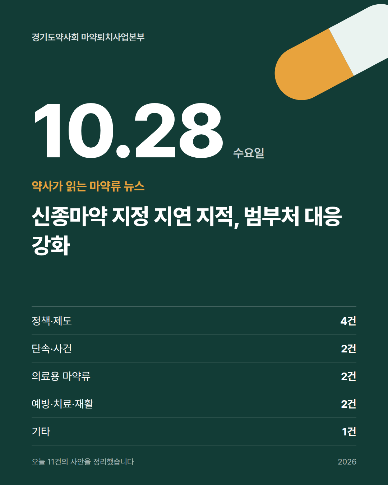
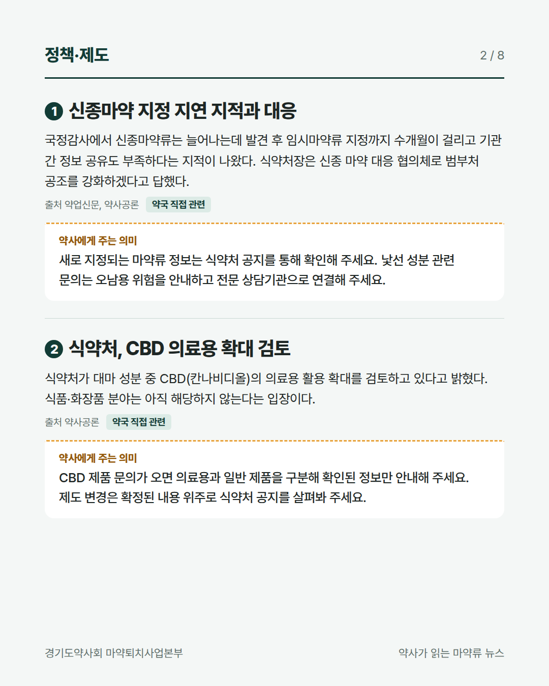
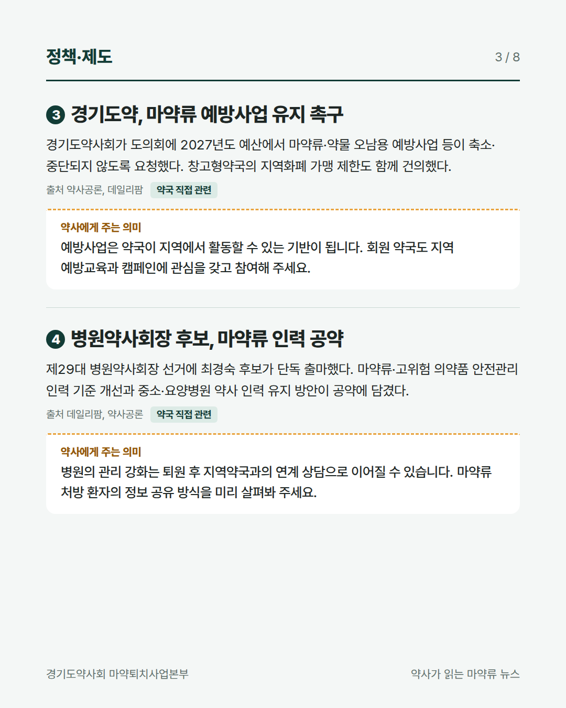
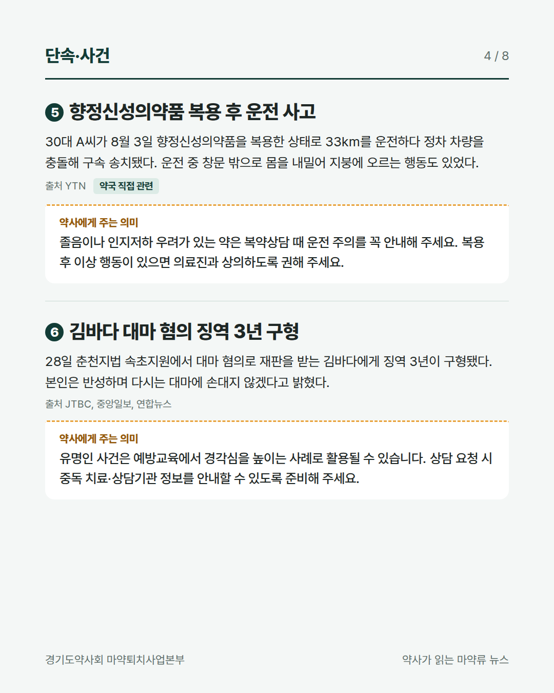
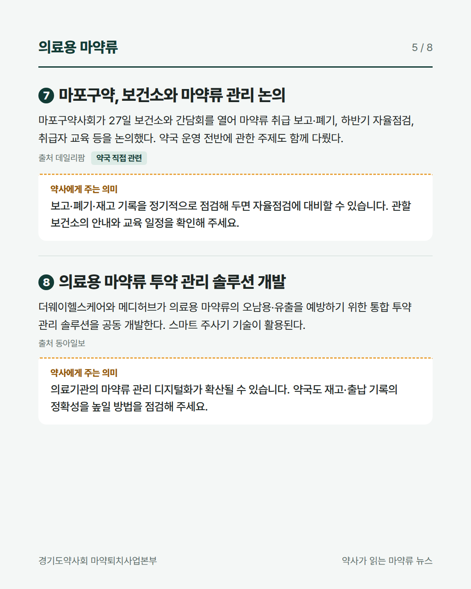
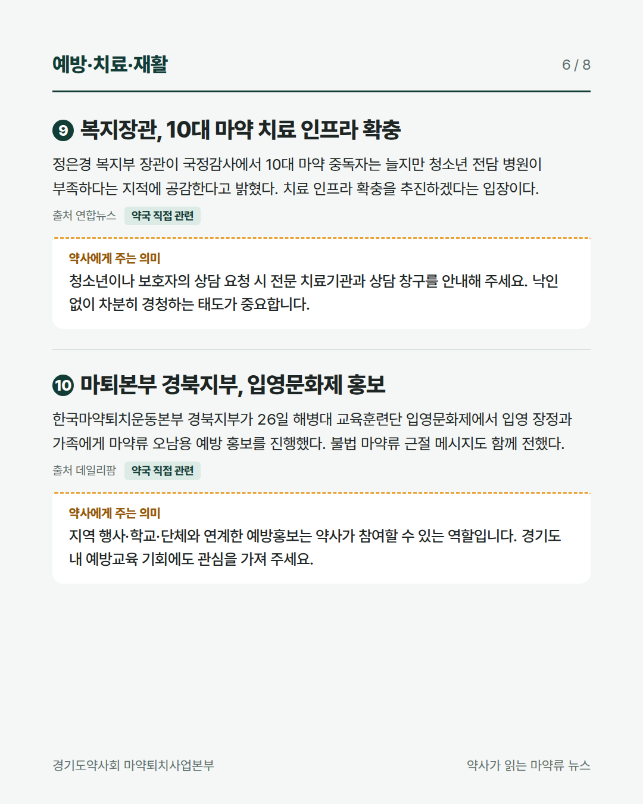
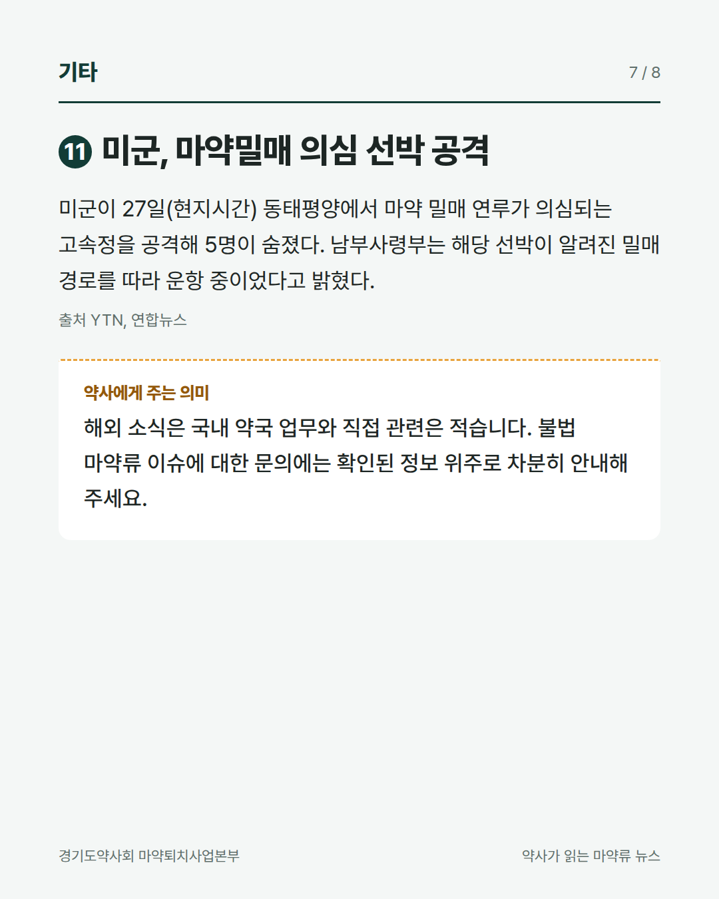
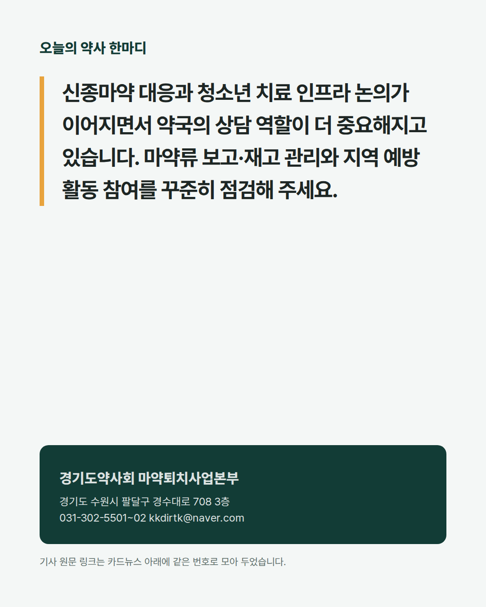

경기도약사회 마약퇴치사업본부
약사가 읽는 마약류 뉴스 2026.10.28








기사 원문
정책·제도
2식약처, CBD 의료용 확대 검토
약사공론 기사 보기단속·사건
5향정신성의약품 복용 후 운전 사고
YTN 기사 보기의료용 마약류
7마포구약, 보건소와 마약류 관리 논의
데일리팜 기사 보기8의료용 마약류 투약 관리 솔루션 개발
동아일보 기사 보기예방·치료·재활
9복지장관, 10대 마약 치료 인프라 확충
연합뉴스 기사 보기10마퇴본부 경북지부, 입영문화제 홍보
데일리팜 기사 보기기타
경기도약사회 마약퇴치사업본부
031-302-5501~02 kkdirtk@naver.com